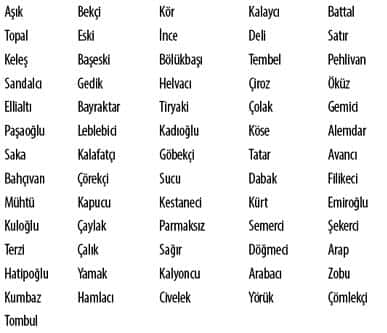

Üsküdar Kayıkçıları ve
Kayıkçıların Demografik Durumu
İstanbul dünya şehirlerinin bütün güzelliklerinden izler taşıyan eşsiz bir kültür koleksiyonu, Asya ile Avrupa’nın buluşma noktası, farklı toplum, kültür, inanç ve medeniyetlerin kavşağı, bir su ve deniz kenti, suyun şekillendirdiği bir su medeniyetinin oluşumuna yön veren bir şehirdir.
Boğazın en işlek ve nadide yerinde kurulmuş olmasıyla Üsküdar; Asya’nın Avrupa ile buluşma noktasıdır. Bu sayede sanat, ticaret ve köklü bir medeniyet merkezi olma özelliğiyle sayılı dünya şehirlerindendir. Üzerine şiirler yazılmış, şarkılar bestelenmiştir ama Üsküdar’ın tarihsel kimliğini ortaya çıkartan, topografyasının boğaz içindeki siluetidir.
Osmanlı döneminde İstanbul şehrinin genişlemesiyle birlikte yerleşim mahalleri boğazın her iki yakasına hızla yayılmış, Boğaziçi’nde semtler, köyler kurulmuştur. Bu köy ve semtlerin birbiriyle hızlı iletişimi ve ulaşımını sağlaması için mekânlar arası insan taşımacılığının önemi zamanla artmıştır. Üsküdar’dan boğazın karşı yakasına geçmek için en uygun vasıta kayıklardı. Üsküdar ve diğer sahil semtlerini birbirine bağlayan en hızlı ve uygun vasıta da dolayısıyla kayıklardı.
Boğaziçi’nde Şirket-i Hayriye’nin kurulması ve buharlı vapurların işlemeye başlamasından önce mekânlar arası insan taşımacılığı kayıklar vasıtası ile yapılmaktaydı. Boğaziçi, Haliç ve Marmara kıyılarındaki köy ve semtlerde yaşayanlar ulaşımı kayıklarla yapmak zorundaydılar. Dolayısıyla Üsküdar ve Üsküdar’ın Boğaziçi semtlerinin hepsinde kayık iskelesi bulunurdu.
Bu bildirimizde 1802 tarihli İstanbul Kayıkçı Esnafı Sayım Defterlerine göre Üsküdar kazası ve Üsküdar’a bağlı semtlerdeki iskeleler, iskelelerde kaçar adet kayık olduğu, kayıkçı sayıları ve bu kayıkçıların demografik durumları ele alınacaktır.
Kayıkçıların Yolcu Taşıma Kuralları
Kayıkçıların genel olarak yolcu taşımada uymak zorunda oldukları kuralları şöyle sıralayabiliriz:
- Kayığa haddinden fazla yolcu alınmaması
- Kadın ve erkek yolcuların aynı anda taşınmaması
- Yolcuların herhangi bir şekilde rahatsız edilmemesi
- Yolcu alımında nöbet usulüne dikkat edilmesi
- Yolcudan fazla ücret alınmaması
- Nizamname ile belirtilen özelliğin dışında kayık kullanılmaması
- Kayıklara yelken takılmaması.
Üsküdar Kayıkçıları
XVI ile XVII. yüzyıl arasında değişik tarihlerde yapılmış olan kayıkçı esnafı sayımlarında Üsküdar iskelelerinin sayılarının deği-şiklik gösterdiğine şahit oluyoruz.
1802 tarihinde yapılan kayıkçı esnafı sayımı sonucunda 880 kisinin kayıkçılık mesleğini icra ettiği görülmektedir. Bunların 43’ü Hristiyan, 46’sı Yahudi ve 791’i İslam dinine mensuptu. Aynı sayım sonucuna göre Üsküdar iskelelerine bağlı olarak çalışan kayık sayısını 385 olarak görmekteyiz.
Üsküdar Kayıkçılarının Aldığı Lakaplar
Osmanlı döneminde insanlar baba adları, memleket adlarıyla aldığı lakaplardan ayırt edilirdi. Üsküdar kayıkçılarının da aldığı lakaplar mevcuttu. Kayıkçıların aldıkları lakapları şöyle sıralayabiliriz:

Üsküdar Kayıkçılarının Memleket Durumu
Kayıkçıların nereli olduğu konusunda görevlilere verilen cevaplarda büyük çoğunluğun İstanbul ve özellikle de Üsküdarlı olmaları dikkati çekmektedir. İstanbul’un Şişli, Kadıköy, Hisar ve Bulgurlu gibi diğer semtlerinden gelip Üsküdar’da çalışanlar da dikkati çekecek durumdadır. Üsküdar Osmanlı Devleti’nin coğrafi topografyasını yansıtan önemli bir merkezdi. Üsküdar iskelelerinde kayıkçılık mesleğini icra edenlerin memleket durumu şöyledir: Edirne, Bağdat, Konya, Tokat, Ürgüp, Arnavut, Bartın, Karadağ, Midilli, Bosna, Kandıra, Erzurum, İnebolu, Çeke, Kozyaka, Çerkeş, Bursa, İzmir, Tosya.
Üsküdar İskeleleri
Üsküdar semtinin iskeleleri, Anadolu tarafının en işlek iskeleleridir. Özellikle şehir merkezindeki iskeleler büyüklük ve işlev bakımından önem arz etmekteydi.
Üsküdar Avrupa’dan Asya’ya geçenlerin en uğrak yeriydi. Üsküdar meydanındaki iskelelerden Doğu’nun ticari ve askeri her türlü malı, deve meydanı denilen Beşiktaş’a geçirilir, buradan Avrupa’nın değişik ülkelerine gönderilirdi.
Şimdi değişik tarihlerde yapılmış kayıkçı esnafı sayımlarında karşımıza çıkan iskele isimlerini zikredeceğiz. Bir sahil semti olan Üsküdar kazasındaki iskeleler şunlardır:
İhsaniye İskelesi, Salacak İskelesi, Ayazma İskelesi, Büyük İskele, Balaban İskelesi, Tophaneyeri İskelesi, Mumhane İskelesi, Kavak İskelesi, Kuzguncuk İskelesi, Sarıtaş İskelesi, Öküz Limanı İskelesi, Hünkâr İskelesi, Taş Limanı, İstavroz İskelesi, Beylerbeyi İskelesi, Vaniköy İskelesi, Çengelköy İskelesi, Gülbahçesi İskelesi ve Kandilli İskelesi.
Bu sayım her ne kadar tüm İstanbul iskeleleri hakkında bilgi vermekte ise de burada Üsküdar kazası iskeleleri, kayıkçı ve kayık sayısı, kethüdaları, demografik yapıları hakkında kısaca bilgi verilecektir.
İhsaniye ve Salacak İskeleleri
Üsküdar’ın Marmara’ya açılan tarafında bulunan bu iskelelerde 16 kayık ve 23 kayıkçı vardı. Kayıkçıların tamamı Müslüman’dı.
Ayazma İskelesi
Ayazma iskelesinde 26 kayık ve 53 kayıkçı bulunmaktaydı. Bu 53 kayıkçıdan 26’sı kayık sahipleri, 27’si ise aylakçı (gündelikçi) idi. Kayıkçıların tamamı Müslüman’dı.
Büyük İskele
Bu iskelede genelde daha büyük kayıklar bulunurdu. Sayım sonucuna göre iskelede 17 kayık, 101 kayıkçı bulunmaktaydı. Kayıkçıların tamamı Müslüman’dı. Büyük İskele’nin Kethüdası Osman Çavuş’tu. Büyük İskele’de ayrıca 6 adet nöbet kayığı ve 17 kayıkçı her daim beklemekte olup, nöbet kayıklarının Mustafa adında ayrı bir kethüdası vardı.
Üsküdar kayıkhanelerinde ihtiyaç duyulduğu zaman görev yapan bağımsız 91 kayıkçı vardı. Büyük iskelede özel müşterilere hitap eden kayık ve kayıkçılar vardı. Bunlar hali vakti yerinde olanlara boğazın karşı yakalarına geçme ve gezinti yapma gibi hizmetler sunardı. Bu kayıklar kendilerine ait olup genel nizam olarak iskele nizamına tabi idiler. Sayıları değişiklik gösterse bile bu sayımda 21 idi.
Seksoncu Kayıkları
Büyük İskele’de ayrıca askeri bölüklere ait kayıkçılar da vardı. Bunlardan en önemlisi Seksoncular Ocağı kayıkçılarıydı. Bu ocağa bağlı olarak 16 kayık ve 32 kayıkçı görev yapmaktaydı.
At Mavnaları
Yük taşımak için kullanılan büyük kayıklara mavna denilirdi. Genel manada yük taşımak için yapılan mavnalara, yaptığı görev itibari ile değişik isimler verilirdi. At kayığı; içerileri döşemeli olup, baş ve kıç tarafları rampalıydı. Rampalar hayvanların kaymamaları için çıtalıydı. İkisi baş ve ikisi kıç tarafında olmak üzere dört kürekleri bulunurdu. Boğazın her iki yakası arasında at taşımak için yapılmışlardı.
İstanbul Gümrüğü’nde görevli Üsküdar at mavnaları Üsküdar’dan Eminönü ve Beşiktaş tarafına at nakletmek için kullanılan kayık türüdür. Üsküdar’ın 13 adet at mavnası mevcut olup bu mavnalarda 49 kişi görev yapmaktaydı.
Büyük İskele’de 27 adet at kayığı ve 107 kayıkçı görev yapmaktaydı. At kayıkçılarının Kethüdaları Seyyid Mustafa idi.
Büyük İskele Ateş Kayıkları
Büyük İskele’de özel görev yapan kayık ve kayıkçı bölüklerinden en önemlisi ateş kayıkları idi.
Balaban İskelesi
Balaban İskelesi’nde 44 adet kayık görev yapmakta olup, bunların 9 adedini gayrı müslimler işletmekteydi. Bu iskelede 95 kayıkçı çalışmakta olup, 12’si gayri müslimdi. İskelenin Kethüdası Tahir’di.
Tophaneyeri İskelesi
Tophaneyeri İskelesi’nin kethüdası Tahir’di. Bu iskelede 38 kayık, 110 kayıkçı görev yapmaktaydı. Bu kayıkçılardan 66’sı aylak-çı-gündelikçi olarak çalışmaktaydı.
Mumhane İskelesi
Mumhane İskelesi’nin Kethüdası Tahir olup, bu iskelede 33 kayık ve 62 kayıkçı görev yapmaktaydı. Bunlardan 33’ü kayık sahibi olup, geriye kalan 29’u kayıkçıların yanında çalışan gündelikçilerdi.
Kuzguncuk İskelesi
Kuzguncuk İskelesi’nin Kethüdası Tahir olup, kethüda vekili Tombul Tahir’di. Üsküdar iskelelerinin diğerlerinden farklı olarak dikkati çeken bu iskelede görev yapan 58 kayıkçının tamamının gayri müslim oluşudur. Bunlardan 46’sı Yahudi, 12’si Hristiyan’dır. Bu iskelede 36 kayık görev yapmaktaydı. 28 kayık Yahudiler, 8 kayık ise Hristiyanlar tarafından işletilmekteydi. Kuzguncuk İskelesi’nde görev yapan kayıkçıların 30’u gündelikçi olarak çalışmaktaydı.
İstavroz İskelesi
Beylerbeyi yakınlarındadır. İstavroz İskelesi’nin Kethüdası Numan’dır. Bu iskelede 13 kayık, 18 kayıkçı görev yapmaktaydı.
Beylerbeyi İskelesi
Beylerbeyi semtinin iskelesidir. Bu iskelede 23 kayık, 40 kayıkçı görev yapmaktaydı. 15 kişi gündelikçi olarak çalışıyordu.
Çengelköy İskelesi
Çengelköy semtinin iskelesi olup, İskele Camii’nin önündedir. Şu andaki iskele Şirket-i Hayriye döneminde yapılmıştır. Çengelköy iskelesinde 19 kayık, 23 kayıkçı görev yapmaktaydı. Görev yapan kayıkçılardan 4’ü Müslüman, 19’u Hristiyan’dır. Kayıkçılardan 4’ü aylakçı olarak çalışmaktaydı.
Gülbahçesi İskelesi
Çengelköy semtinin diğer iskelesidir. Gülbahçesi İskelesi’nde 23 kayık, 43 kayıkçı görev yapmaktaydı. Bunlardan 9’u gündelikçi olarak çalışmaktaydı.
Kandilli İskelesi
Kandilli semtinin iskelesidir. Kandilli İskelesi’nde 12 kayık, 17 kayıkçı görev yapmaktaydı. Bunlardan 12’si kayık sahibi, 5’i gündelikçi olarak çalışıyordu.